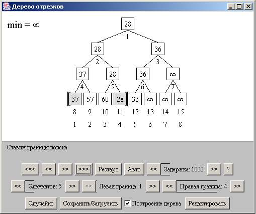
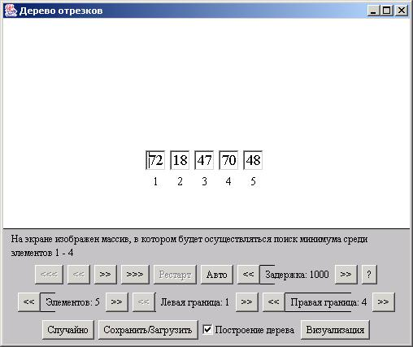

Описание интерфейса визуализатора SegmentsTree
Описание элементов управления
Общий вид визуализатора показан на рисунке 1. Апплет состоит из двух частей,
первой - область, где рисуется само дерево и отображается ход поиска,
и второй - панель управления, где пользователь может изменять входные данные и параметры визуализации

рисунок 1
Основные кнопки:
- Кнопка "<<<" - большой шаг назад
- Кнопка "<<" - шаг назад
- Кнопка ">>" - шаг вперёд
- Кнопка ">>>" - большой шаг вперёд
- Кнопка "Рестарт" - переход визуализатора в начальное состояние
- Кнопка "Авто" - запускает автоматическую демонстрацию работы алгоритма
- Кнопка "<< Задержка: 1000 >>" - устанавливает задержку между шагами при
автоматической демонстрации работы алгоритма
- Кнопка "?" - предоставляет информацию об авторе визуализатора
- Кнопка "Редактировать"/"Применить" - осуществляет переход между режимами редактирования
и визуализации
- Кнопка "Случайно" - заполняет массив случайными числами
- Кнопка "Сохранить/Загрузить" - позволяет сохранять и загружать состояния визуализатора
- Кнопка "<< Элементов: 5 >>" - устанавливает количество элементов в массиве
- Кнопка "<< Левая граница: 1 >>" - устанавливает левую границу поиска
- Кнопка "<< Правая граница: 4 >>" - устанавливает правую границу поиска
- Флажок "Построение дерева" позволяет включить или выключить визуализацию построения дерева
Режимы работы апплета
Визуализатор может находиться в двух разных режимах работы: в режиме визуализации и в режиме редактирования.
Режим редактирования (рисунок 2) позволяет пользователю вручную формировать элементы массива.

рисунок 2